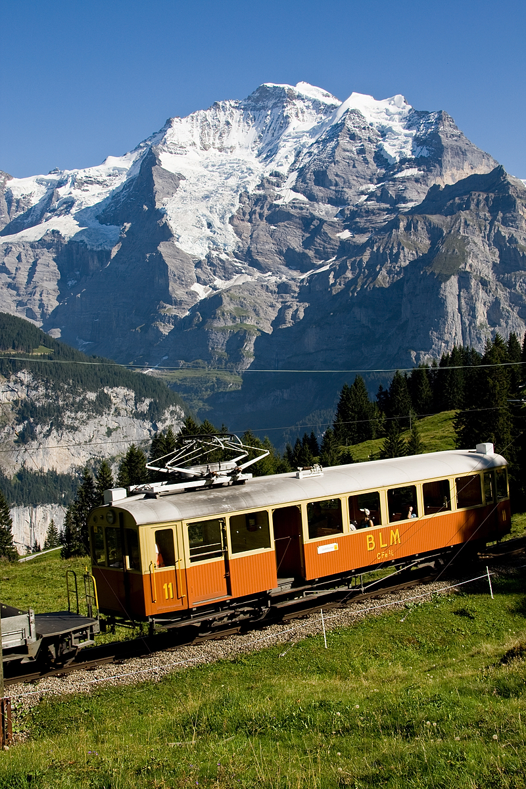
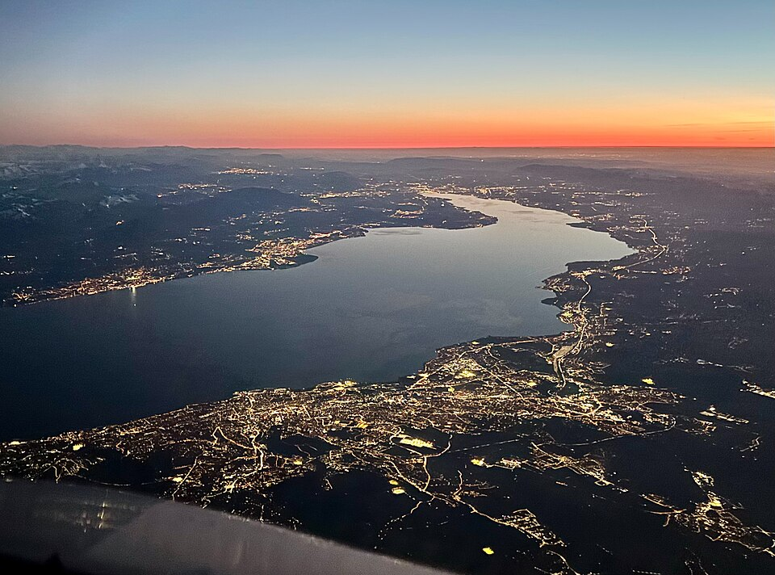
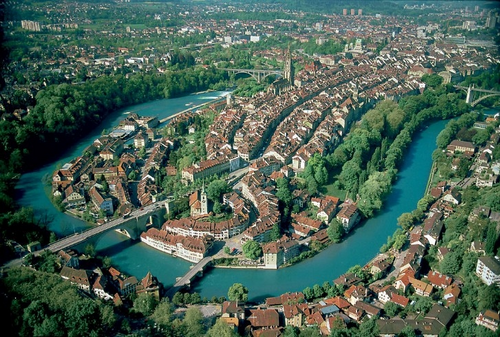
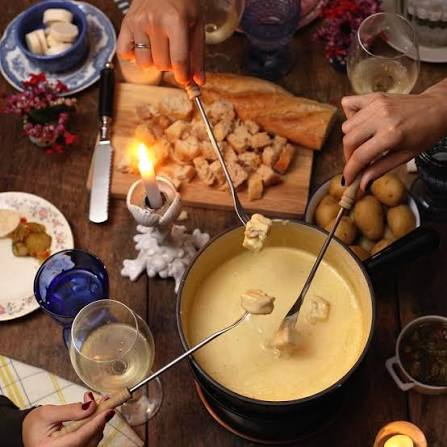
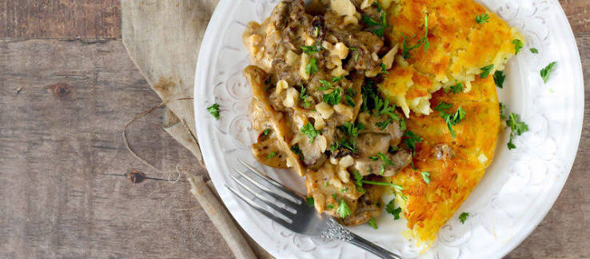
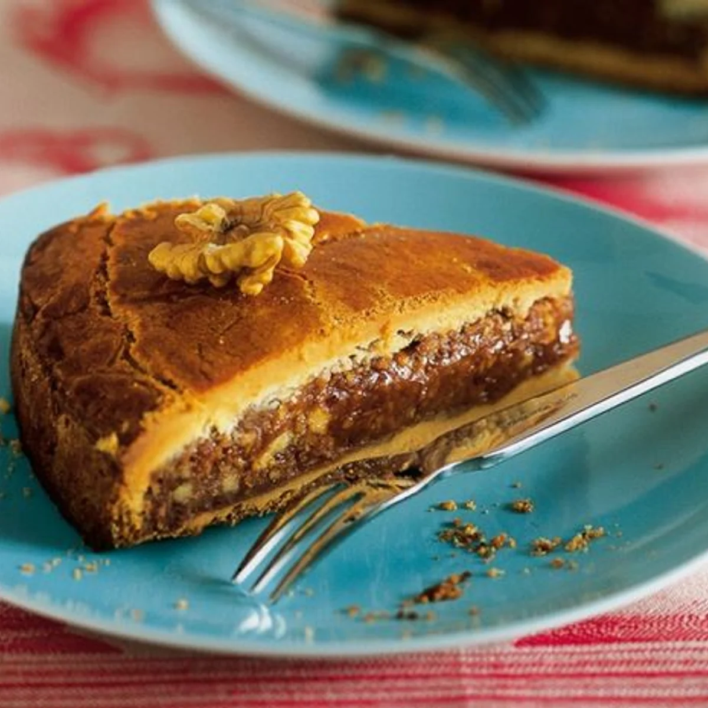
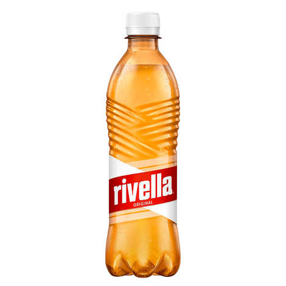

Визначні пам'ятки
Маттергорн — культова пірамідальна вершина Альп у курортному містечку Церматт, символ країни та бренд швейцарського шоколаду.

Маттергорн (нім. Matterhorn, італ. Cervino) — гора у Пеннінських Альпах на кордоні Італії та Швейцарії. Ця сьома за висотою гірська вершина Альп розташована між швейцарським населеним пунктом Цермат (кантон Вале) та італійським населеним пунктом Червінія (область Валле-д'Аоста). Маттергорн має чотири стіни: північна височіє над долиною Цмутт, південна дивиться на Червінію, східна та західна — відповідно на хребет Горне та гору Дан Д'Еран. Стіни розділяють чотири хребти: Гернлі (північно-східний), Ліон (південно-західний), Цмутт (північно-західний) та Фург (південно-західний).
Юнгфрау — регіон у Бернських Альпах із найвищою залізничною станцією Європи (Jungfraujoch — «Вершина Європи») та вражаючим льодовиком Алеч.

Юнгфрау (нім. Jungfrau, «діва/незаймана») — один з 29 чотиритисячників Швейцарських Альп та одна з головних вершин Бернських Альп (третя за висотою), розташована між північним кантоном Берн та південним кантоном Вале, на півдороги між містами Інтерлакен та Фіш. Разом з горами Айгер та Мьонх, Юнгфрау формує масивну стіну, яка нависає над Бернським високогір'ям (нім. Berner Oberland) та Швейцарським плато, і є одним з найвиразніших краєвидів Швейцарських Альп.
Женевське озеро — найбільше озеро в Альпах із легендарним Шильйонським замком на березі, оточене виноградниками Лаво (пам'ятка ЮНЕСКО).

Жене́вське о́зеро (Озеро Лемáн) (фр. Lac Léman, Le Léman, нім. Genfersee, англ. Geneva lake) — прісноводне озеро на кордоні Швейцарії та Франції, у міжгірській западині між Альпами та горами Юра. На березі озера розташовані зі швейцарського боку такі міста, як Женева, Лозанна, Монтре, Веве, Морж, а з французького — Евіан і Тонон. Друге за площею прісноводе озеро в центральній Європі (після Балатону). 60 % його перебуває під юрисдикцією Швейцарії (кантони Во, Женева, і Вале) і 40 % — Франції. Улоговина озера сформована льодовиком. Озеро умовно поділяють на три частини: Високе Озеро (східна частина від впадіння Рони до лінії Меєрі-Ріва), Велике Озеро (найширша його частина) та Мале Озеро (звуження у південно-західній частині від лінії Івуар-Пранжен до витоку Рони в Женеві).
Берн — «федеральне місто» із чудово збереженим середньовічним центром, годинниковою вежею Цитглогге та ведмежою ямою.

Берн (нім. Bern, фр. Berne, італ. Berna) — де-факто — столиця Швейцарії, четверте за кількістю населення місто країни (після Цюриха, Женеви та Базеля). Також є столицею кантону Берн. Швейцарці офіційно називають Берн не столицею, а «федеральним містом» (нім. Bundesstadt). Більшість населення Берна розмовляє німецькою мовою, точніше — верхньоалеманською говіркою. Є деякий відсоток франкомовних мешканців. З 1983 року Стара частина Берна визнана об'єктом Світової спадщини ЮНЕСКО.
Кухня та гастрономія
Кухня Швейцарії — це унікальний синтез кулінарних традицій Німеччини, Франції та Північної Італії, де головне місце посідають вишукані сири, м'ясо та шоколад.
Фондю (Fondue) — розплавлений у спеціальному казанку (какелоні) сир (зазвичай суміш Грюєру та Емменталю) з додаванням білого вина та часнику. Споживається шляхом занурення шматочків хліба на довгих виделках.

Фондю — це традиційна швейцарська страва з розігрітого сиру, шоколаду або бульйону, яку подають у спеціальному посуді (какелоні або фондюшниці) із підігрівом.
Цюрихський гешнетцлетесь (Zürcher Geschnetzeltes) — ніжні шматочки телятини у вершково-грибному соусі з додаванням білого вина. Найчастіше подається разом із решті.

Цюрихский гешнетцельтес (Zürcher Geschnetzeltes) — это традиционное швейцарское блюдо из тонких полосок телятины в нежном сливочно-винном соусе с добавлением грибов, которое классически подается с картофельными рёшти.
Енгадинський горіховий торт (Bündner Nusstorte) — традиційний пісочний пиріг із насиченою начинкою з карамелізованих волоських горіхів та меду.

Енгадинський горіховий торт (або пиріг «Енгадін», нім. Engadiner Nusstorte, ретor. Tuorta da nuschs) — це традиційний швейцарський десерт із кантону Граубюнден. Він являє собою круглий, відносно плаский пиріг з пісочного тіста із солодкою та густою начинкою з крупно посічених волоських горіхів, карамелі та вершків.
Rivella — популярний швейцарський газований безалкогольний напій, виготовлений на основі молочної сироватки.

Rivella — це культовий швейцарський безалкогольний газований напій, створений у 1952 році. Його головна особливість полягає в тому, що він виготовляється на основі молочної сироватки (вона становить близько 35% напою) з додаванням суміші фруктів і трав.
Культура та традиції
Культура Швейцарії сформувалася під впливом кількох мовних регіонів, зберегши глибоку повагу до місцевих традицій та унікального способу життя. Багатомовність є природною частиною щоденності, адже мешканці різних кантонів спілкуються німецькою, французькою, італійською та ретороманською мовами. Альпійські народні звичаї тісно пов'язані з гірським побутом. Звідси походять співи йодлем, гра на масивних дерев'яних альпійських рогах та видовищні осінні свята, коли прикрашену квітами худобу урочисто спускають із гірських пасовищ у долини. Багата й спортивна спадщина, де особливе місце посідає традиційна боротьба швінген. Культурний календар країни насичений яскравими подіями, серед яких визнячаються гучні весняні карнавали у Базелі та Люцерні з їхніми костюмованими ходами. У Женеві ж щороку святкують історичну перемогу Ескаляд, за традицією розбиваючи шоколадні казанки із марципановими овочами. Світову славу Швейцарії принесли ремесла та дизайн. Країна є беззаперечним еталоном годинникового мистецтва, а також батьківщиною видатних архітекторів і легендарного швейцарського стилю в графічному дизайні. Наостанок, важливим елементом місцевої культури залишаються такі цінності, як нейтралітет, виняткова пунктуальність, порядок і прагнення до загального консенсусу.
Особисті враження
Швейцарія справляє враження країни, де все доведено до досконалості, а людина живе в абсолютній гармонії з природою. Найбільше вражає контраст між сніговими альпійськими піками та дзеркальними озерами, колір води в яких здається майже нереальним. Особливе відчуття викликає місцевий ритм життя та організація простору. Червоні панорамні потяги, що бездоганно секунда в секунду долають круті гірські перевали, дарують відчуття суцільної казки за вікном. А гірське повітря тут настільки чисте й свіже, що ним буквально неможливо надихатися. Швейцарія дарує рідкісне відчуття спокою, безпеки та затишку. Це місце, де час ніби сповільнюється, дозволяючи насолоджуватися кожною детальною дрібницею — від смаку гарячого фондю після прогулянки до дзвону дзвіночків корів на альпійських луках.